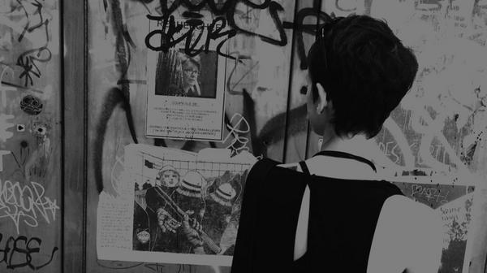

Rekka Bell
Is a cartoonist and sailor. Also goes under the full name of Rekka Bellum. Also uses the short form Rek.
Rek is a non-binary cartoonist and sailor.
I am currently based in the waters of the Pacific Northwest, where the weather is mild and kinder to sailboats, but their heart is in Québec. They enjoy drawing by hand with ink, and are fond of long ocean passages, small web, cycling and birds (do ask them about cormorants).
With the project HundredRabbits, Rek writes about permacomputing, practical liveaboard skills/knowledge, and food preservation, while producing fun art projects with Devine.
They make art for magazines, children's books, as well as visuals for software and games (see publications). Their first self-published game Oquonie was nominated for a visual arts award at the 2015 Independent Games Festival in San Francisco. In 2020 they published Busy Doing Nothing, a book documenting their 50-day sail from Shimoda to Victoria.
They spend their days documenting repairs on the boat, food experiments, as well as making small games, art and toys. They also take comissions, provided the projects align with their values.
Rek lived in Japan for two years(2012-2014), and after returning to Canada decided to try and return there by sailboat. And so, from 2016 to 2020, Rek circumnavigated the Pacific Ocean by sail, passing through Mexico, French Polynesia, Cook Islands, Niue, Tonga, New Zealand, Fiji, The Marshall Islands and Japan.
They've been making websites since they were a teenager, they would farm free geocities space by hot-linking between mutiple accounts—they've since abandoned that practice. These days, they enjoy making and maintaining simple websites. They manage , GrimGrains, 100r.co, Wiktopher and Circa Comic.
View the full list of projects they've released, and see the tools and software that they use.
Small online community involvement
In the early 2000's Rek was known as "Esse" online. Being a shy, lonely kid, online interactions helped them find like-minded people. Esse was active in the FDD(fictional digidestined) community, with the websites The Forgotten Digidestined(2001-2006), Esse's Digimon Adoptions(2002-2005) later, EDA became Sagari-Cross(2005-2009) hosted by Legend (injenn.net) until I started self-hosting the site myself. Esse hosted a forum (Zephopolis) where they would roleplay characters with friends. Back then, roleplaying with friends online was a big part of Esse's life. In 2005 Sagai-Cross became predominantly a portfolio website. It's sad that this happened. In 2011 they changed their domain name to kokorobot.ca.
Later, Esse discovered art hosting sites like DeviantArt and SheezyArt, and spent a lot of time on CFSL and the Isopharmacy forums. Isopharmacy was an artistic community, we would create art challenges and talk about art, games etc. In 2010, Esse and Devine created the studio Drownspire. Together we designed and sold small figurines (vambits), apparel, jewellery and books. At the time, they organized Drink & Draw events in Montreal. These events inspired the creation of art books (Erri) and the comic collective Merure. We released 3 Merure books in total, under the non-profit name of MachineMachine.
Now, Rekka hangs around the Merveilles instance on Mastodon, but thirsts for a place to exchange with people outside of social media.
Experience
In high school, Rek enjoyed working with wood and worked on many art projects.
Rek did a two-year creative arts program at the Champlain Regional College on the south shore of Montreal(2002-2004), where they learned how to do digital art, movie-making, as well as sculpture and painting (it was a very varied program). They helped found the Visual Arts Club in the school.
Then Rek attended the Cégep du Vieux Montréal and enrolled in their excellent 2d animation course(2005-2008), where they produced the short film uno.
From 2007 to 2016, Rek worked in-house at a variety of art, game and animation studios like Mandarine 24, Volta, Pascal Blais Studio and Sava Transmédia. In 2012, Rek moved to Japan and worked at a—then small— animation studio in Shinjuku. They moved back to Montréal in 2014 and worked at Hibernum Créations and Télé-Québec. Throughout their career, they also did a lot of freelance work for edition companies, illustrating children's books for ERPI, Boréal, Transcontinental, Druide, Bayard Canada etc. After 2016, Rek focused on making projects for Hundred Rabbits.
Contact
Email them at rekkabell at gmail dot com for art, cormorant or website related inquiries. They are not interested in producing NFts for anyone, nor do they accept crypto payments. You can also find them on Mastodon. Keep up with updates to this site with RSS. It is also possible to contact Rek on the birdsite by way of the @HundredRabbits account, they no longer have a personal account on the platform.